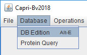
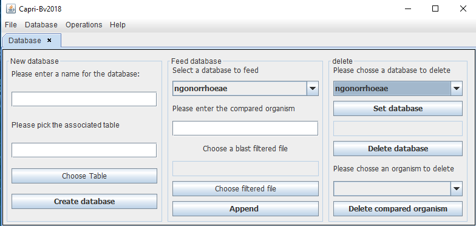
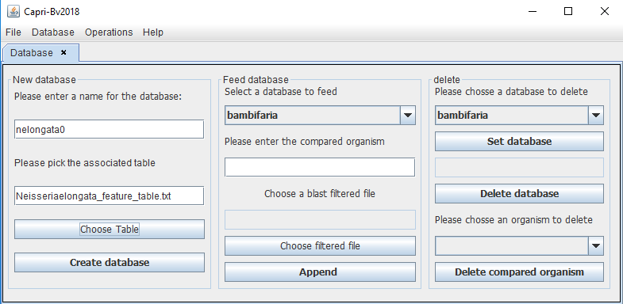
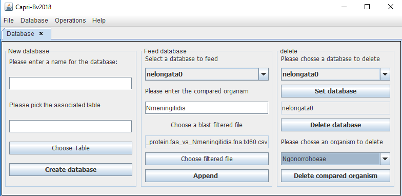
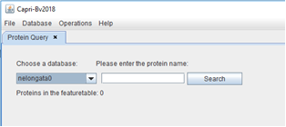
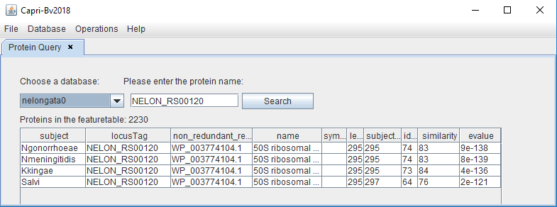

Database menu
In this menu the user has two choices, "DB Edition" and "Protein Query".
DB Edition
This is used to build databases. After the user chooses this option a panel will appear with three options: create the database, feed the database or delete one entry or a whole database.
To build the database, the user needs to give a name to the database (usually the name of the reference) and associate its table file (_feature_table.txt). In this example for N. elongata as reference:
name: nelongata0
table file: GCF_000818035.1_ASM81803v1_feature_table.txt (renamed Neisseriaelongata_feature_table.txt in the following figure)
To feed the database (herein nelongata0), the user has to add the name of this organism to append (without space) and choose the corresponding filtered file (.csv in the "Filtered" folder).
The last option is to delete an organism or the whole database. The user has to select the required database and then click on "set database" to apply the changes.
Protein Query
This option is to query the database to find information on a given protein of interest. The user can simply type the ref.seq or the locus tag to obtain the results.
 